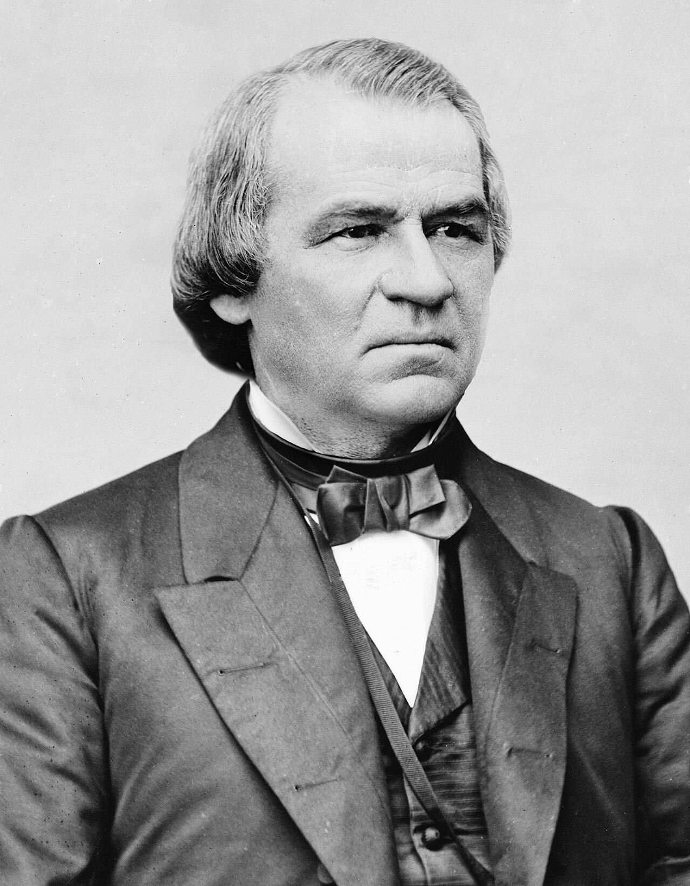

Directions: Fill in the chart as the settlement of 1865 takes shape piece by piece. Keep this page in your notebook. You will use it again on the review day before the unit test.

| Piece of the story | What happened | Who gained or lost | The evidence |
|---|---|---|---|
| A new president | |||
| Pardons and conventions | |||
| The Bureau on the ground | |||
| Freedom reaches Texas | |||
| The Codes answer | |||
| Freedpeople answer |
The settlement in one sentence. Finish this sentence in your own words, using at least two rows of the chart as evidence. Johnson's restoration gave the South back its governments and its land, but it left freedpeople...
| Piece of the story | What happened | Who gained or lost | The evidence |
|---|---|---|---|
| A new president | Lincoln was assassinated in April 1865, days after Appomattox, and Andrew Johnson of Tennessee became president with the peace unsettled. | Gained: a president committed to lenient restoration; at stake: who would set the terms | Johnson acted at once, while Congress was out of session, and ran restoration from the presidency. |
| Pardons and conventions | The Amnesty Proclamation of May 29, 1865 pardoned most former Confederates and restored property except in enslaved people. Conventions of the prewar white electorate voided secession, abolished slavery, and repudiated war debts, and the states were treated as restored. | Gained: former Confederates and their leaders, pardoned by the thousands; lost: any congressional terms | Fourteen excepted classes had to apply personally, and no condition required Black suffrage or equal rights. |
| The Bureau on the ground | The Freedmen's Bureau, created March 3, 1865, fed the hungry, ran hospitals and courts, supervised contracts, legalized marriages, and built schools. | Gained: freedpeople and destitute refugees, a federal presence; limited: its agents, few soldiers behind them | Agents stood between planters wanting the old discipline and freedpeople wanting wages, land, and schools. |
| Freedom reaches Texas | General Granger's General Orders No. 3 at Galveston on June 19, 1865 announced all enslaved Texans free, with absolute equality of personal rights, and advised them to remain home and work for wages. | Gained: enslaved Texans, freedom enforced at last; instructed: to stay put and work | Black Texans marked June 19 as Emancipation Day, later Juneteenth. |
| The Codes answer | Restored legislatures elected former Confederate officers and passed the Black Codes. Mississippi's Vagrant Law fined an unemployed freedman up to fifty dollars and hired out those who could not pay. | Lost: freedpeople's control of their labor and movement; gained: planters, a disciplined workforce | Black children were apprenticed, often to their parents' former enslavers, without parental consent. |
| Freedpeople answer | The Edisto committee petitioned in October 1865 from labor and loyalty for the right to buy the land they had made, and lost it. Jourdon Anderson demanded $11,680 in back wages and asked after his daughters' safety and his children's schools. | Lost on Edisto: the land; stated by both records: freedom's terms in wages, safety, and schools | Anderson's test: pay for thirty two years of his labor and twenty of Mandy's first. |
The settlement in one sentence. Strong answers complete the sentence with the fights the settlement left open. Johnson's restoration gave the South back its governments and its land, but it left freedpeople to fight for the ballot, equal rights in court, land of their own, fair wages, and schools, against Black Codes rebuilding the old labor discipline in statute form, with only the Bureau standing on their side of the line.